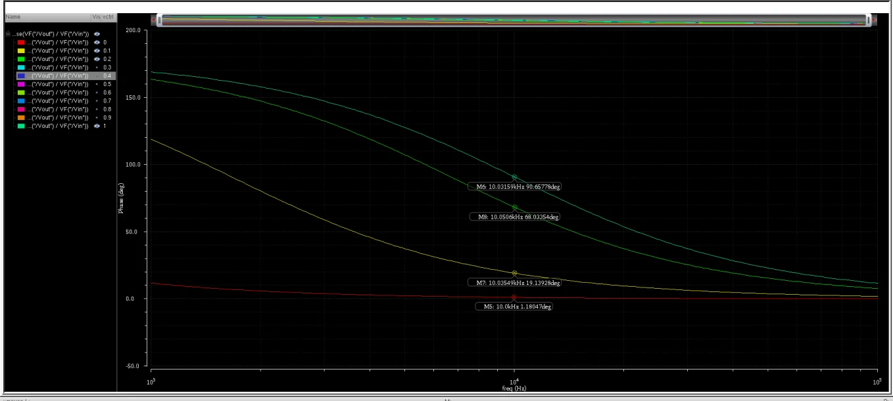
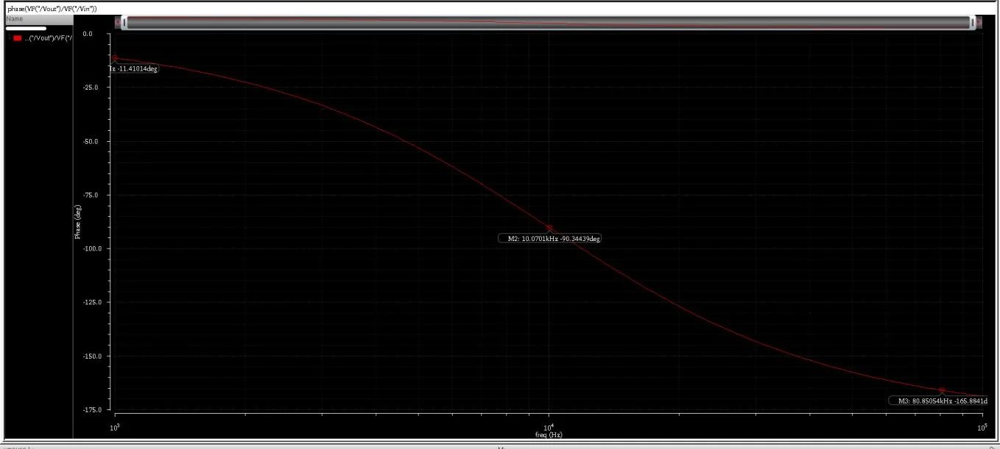
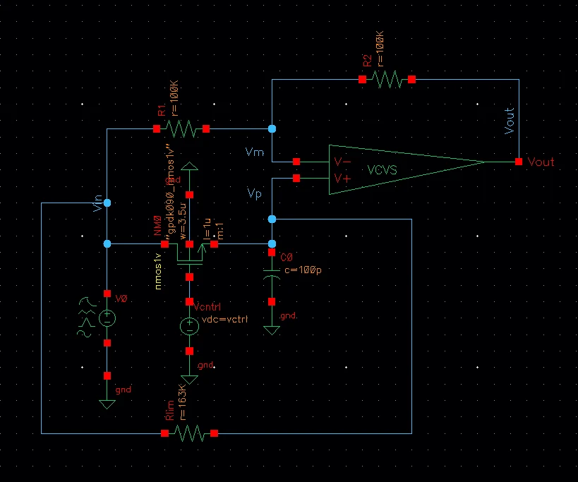
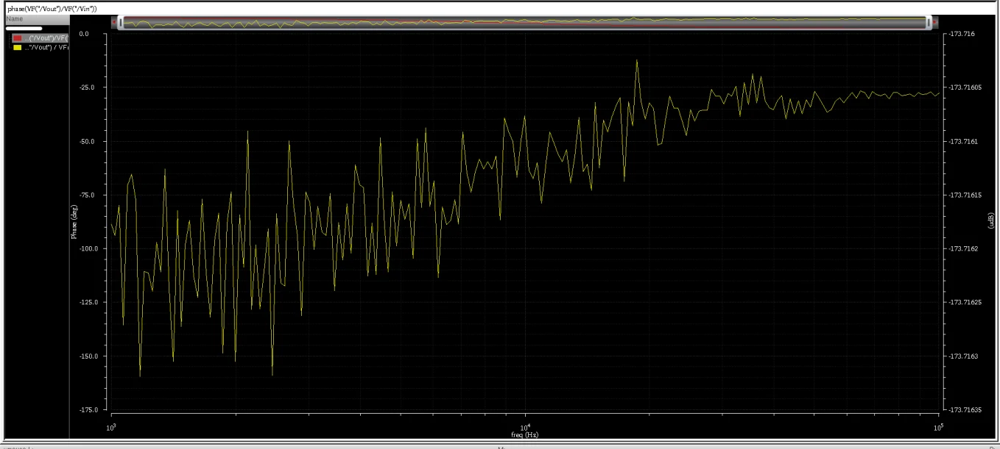
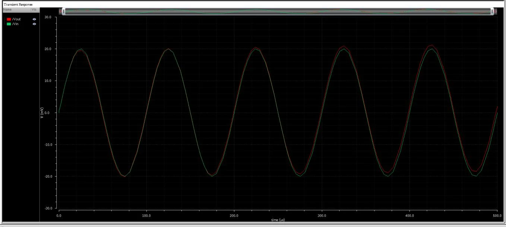
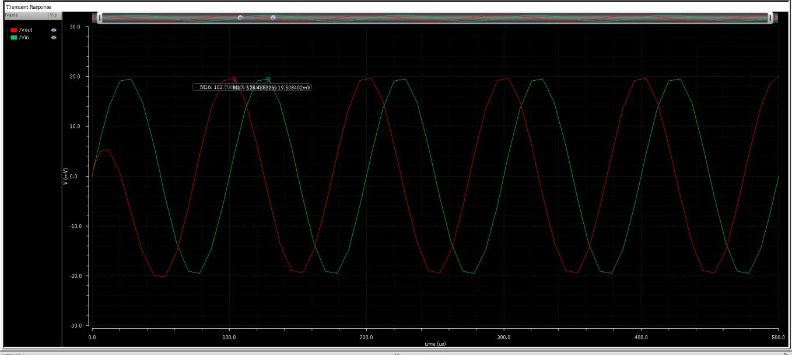

Analog Signal Processing
0–90° Voltage-Controlled All-Pass Phase Shifter
Cadence Virtuoso · GPDK 90 nm nmos1v · Spectre AC / transient
A positive-phase all-pass network (C in series, controlled resistance to ground) built around an ideal-VCVS active stage with R1 = R2 = 100 kΩ. Sweeping Vctrl from 0 to 1 V moves the phase at 10 kHz from about 1° to about 90° while the gain stays at 0 dB.

Design approach
For a 90° shift ωRC = 1, so with C = 100 pF at 10 kHz the controlled branch must be about 159 kΩ. The design was first verified with a fixed 159 kΩ resistor, then the resistor was replaced by an NMOS in series with 153 kΩ (W = 1.2 µm, L = 1 µm). A 100 MΩ bias resistor stops the Vp node floating when the NMOS is off.


Results
The phase-versus-Vctrl curve is nonlinear: above about 0.5 V the NMOS is strongly on and its resistance is small next to Rseries, so the phase saturates near 90°.
| Vctrl (V) | 0.0 | 0.1 | 0.2 | 0.3 | 0.4 | 0.5 | 0.6 | 0.7 | 0.8 | 0.9 | 1.0 |
|---|---|---|---|---|---|---|---|---|---|---|---|
| Phase at 10 kHz (°) | 1.18 | 19.14 | 68.03 | 83.53 | 87.35 | 88.83 | 89.43 | 89.51 | 90.26 | 90.37 | 90.66 |



Scope and limitations
- The active stage is an ideal VCVS (gain 100 k) with no supply pins, so the required 2–5 V supply range was not verified.
- A supply-powered
ahdlLibop-amp was attempted but the Cadence environment could not compile its AHDL model (VACOMP-1008). - An NMOS used as a resistor distorts with signal amplitude; transients used a 20 mV peak input. No THD or amplitude-limit analysis.
- Phase is reported at 10 kHz only for the Vctrl sweep.